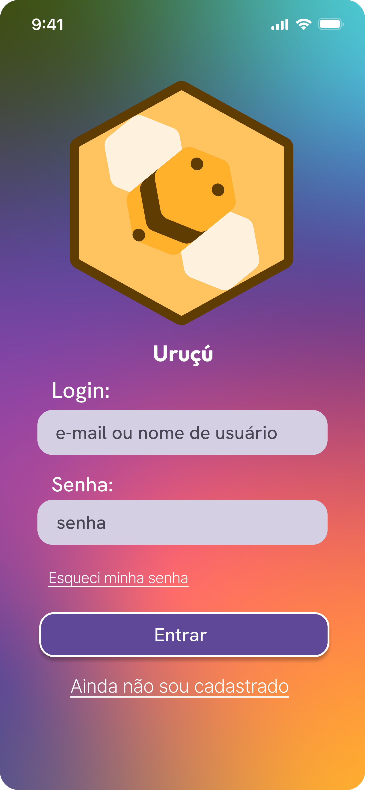
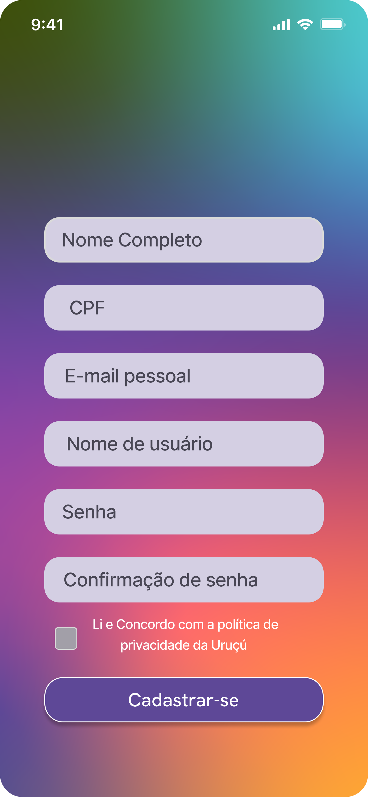

Plataforma de gestão de projectos para empresa de consultoria IT. Sistema com 4 perfis de utilizador distintos — Admin, GP, TM e DEV — com gestão de clientes, projectos, tarefas e indicadores de execução. Desenvolvida com FlutterFlow no contexto do mestrado.
"Quatro perfis, uma plataforma — hierarquia de permissões que acompanha a estrutura real de uma consultoria IT."


A 2A Consulting é uma empresa fictícia de consultoria IT usada como caso de estudo no contexto do mestrado. O desafio foi desenhar uma plataforma de gestão de projectos que reflectisse a hierarquia organizacional real de uma consultoria — com permissões, fluxos e vistas distintas para cada perfil de utilizador.
O processo partiu de análise de sistemas existentes (Jira, Linear, Monday) e de entrevistas com profissionais de IT para compreender os pontos de fricção na gestão de projectos em consultoria. A arquitectura de informação foi o trabalho central — definir o que cada perfil vê, pode editar e precisa de monitorizar.
A arquitectura do sistema foi desenhada em três camadas: gestão de organização (Admin), gestão de projecto (GP) e execução (TM/DEV). Cada camada tem acesso apenas ao que é relevante para o seu papel — sem ruído de informação que não lhe pertence.
Os fluxos de aprovação foram cuidadosamente mapeados: criação de projecto requer Admin, atribuição de tarefas é responsabilidade do GP, e o Developer apenas regista progresso e tempo. Esta separação elimina ambiguidade operacional e espelha a estrutura de accountability real de uma consultoria.
— 2A Consulting SI · Gestão de Projectos · Web App · Mestrado UTAD